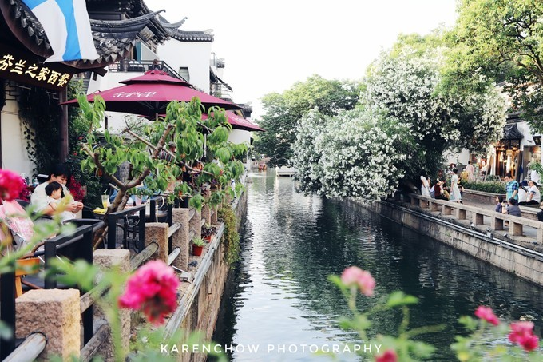
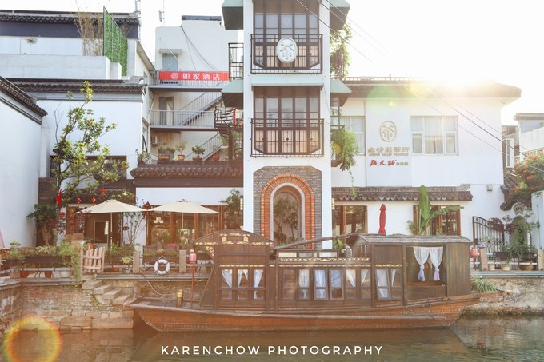

平江路

地铁：地铁2号线山塘街站 公交：到虎丘山门及虎阜桥：949、游1、游2；到半塘桥
·平江路是苏州的一条历史老街，一条沿河的小路，全长约1.6公里，苏州古城迄今为止保存最为完整的一个区域，堪称古城缩影。东西两侧有悬桥巷、大儒巷、中张家巷、大新桥巷等小巷more »
七里山塘

地铁： 1号线相门站或临顿路站下 公交： 乘坐301路、305路，在平江路站下。
·东连“红尘中一、二等富贵风流之地”阊门，西接“吴中第一名胜”虎丘，长约七里。是唐代大诗人白居易任苏州刺史时募工凿河堆堤而成，至今已有一千一百余年历史。more »